PAIX
Presentamos la plataforma desde donde Ushuaia conecta al mundo con la Antártida.
temporada 2023–24
antárticos activos
a la Península Antártica
la política antártica provincial
Las decisiones antárticas se toman a 3.000 km de la Antártida.
La Dirección Nacional del Antártico, el Comando Conjunto Antártico y las dependencias de Cancillería planifican desde Buenos Aires. A 3.000 kilómetros del único lugar del país desde donde se puede abastecer el continente blanco.
La Ley 585/03 (Art. 5) establece que la Provincia debe complementar a las instituciones nacionales en materia antártica. El complemento real no puede darse a distancia. PAIX es la plataforma desde la cual hacer posible esa convergencia.
Ushuaia es la gateway antártica más favorecida por la geografía en el hemisferio sur. Las gateways más avanzadas del mundo —Christchurch, Hobart, Punta Arenas— operan desde una lógica civil, autónoma e internacional: ofrecen capacidades predecibles a cualquier programa antártico, independientemente de sus propios programas nacionales. Esa autonomía operativa es el eje que organiza PAIX.
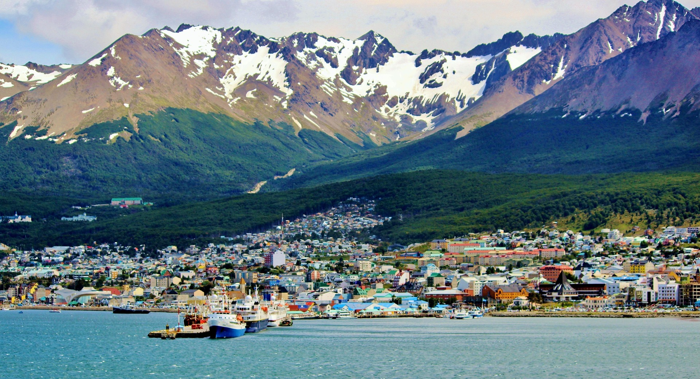
Nueve vectores.
Un sistema.
PAIX organiza su desarrollo en torno a nueve vectores que convergen en el mismo territorio, bajo el mismo marco normativo, con el mismo horizonte. Cada uno refuerza a los demás.
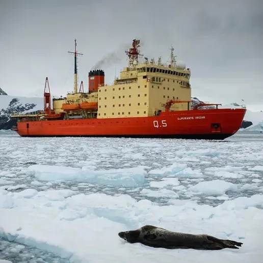
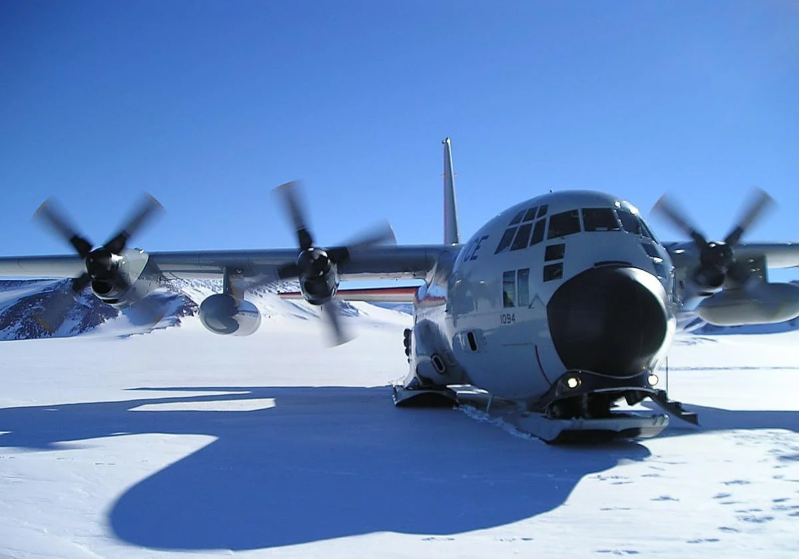
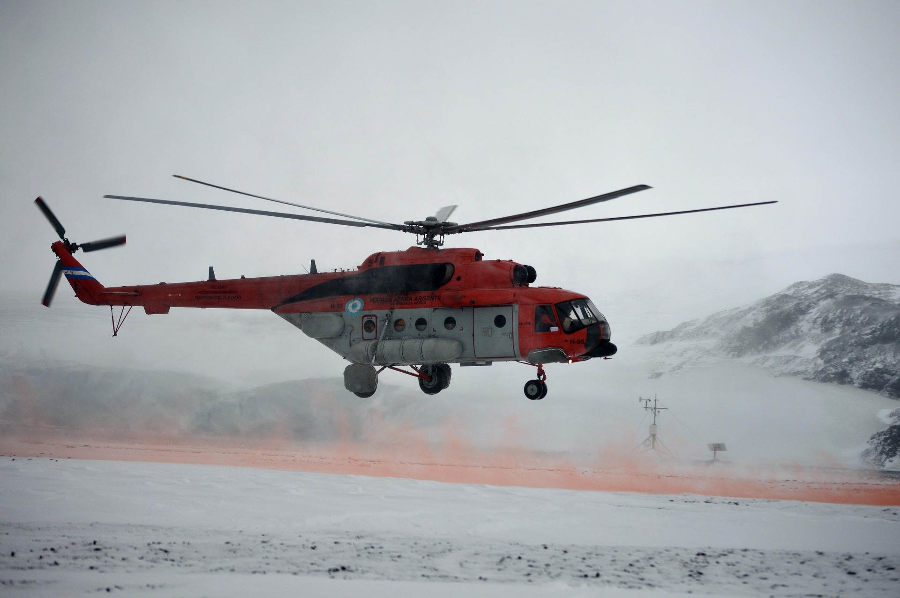
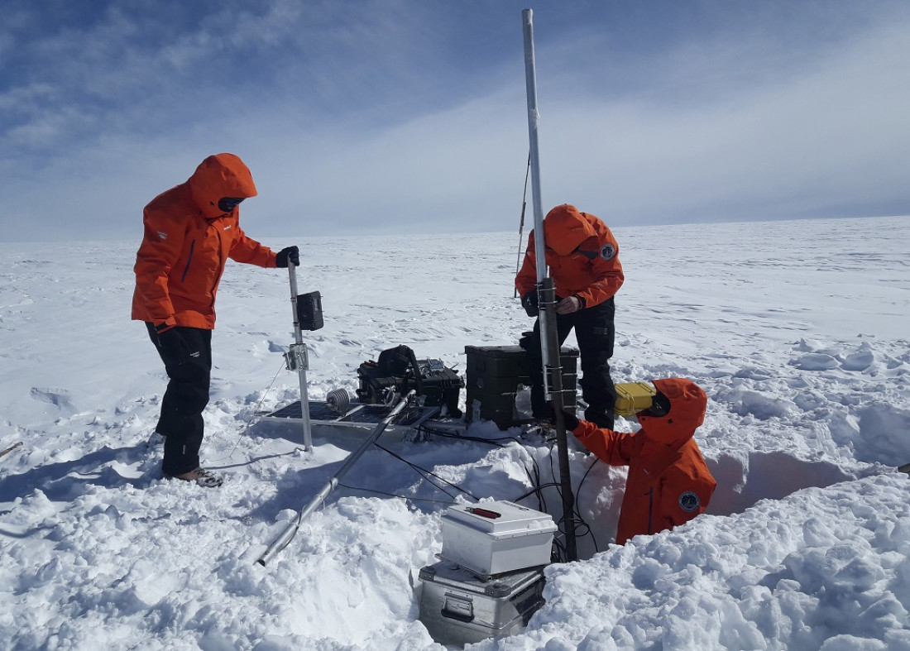
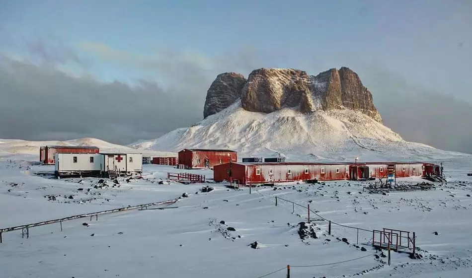
Tres lecturas.
Una sola palabra.
PAIX no es solo un acrónimo. Es un nombre construido en capas: cada una con su propia lógica, todas convergentes en el mismo significado.
La X representa a Ushuaia a través de la tradición ortográfica del español colonial, en la que los topónimos de origen indígena se escribían con esa letra: México, Oaxaca, Xochimilco. El nombre Ushuaia proviene del Yagán —la lengua del pueblo que habitó el extremo austral— y esa raíz fonética lleva el mismo espíritu que la grafía histórica.
Paix es el término francés para paz. El idioma de la diplomacia internacional. Una referencia directa al espíritu del Tratado Antártico: el acuerdo de cooperación pacífica entre naciones más longevo de la historia moderna, firmado en 1959, vigente como marco regulatorio de todo lo que ocurre en y desde la Antártida.
Pax, en latín, es la paz que todas las lenguas del sistema antártico comprenden sin traducción. Una convergencia que no fue buscada pero que el nombre porta con naturalidad. Cuando alguien pregunta qué significa PAIX, la respuesta ya es parte del discurso del proyecto.
Nueve vectores.
Un sistema.
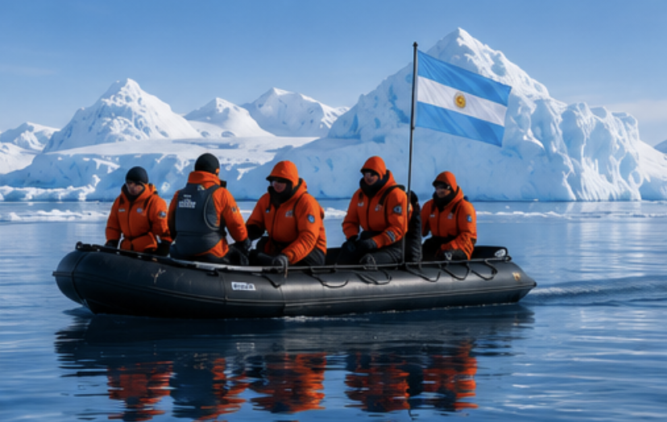
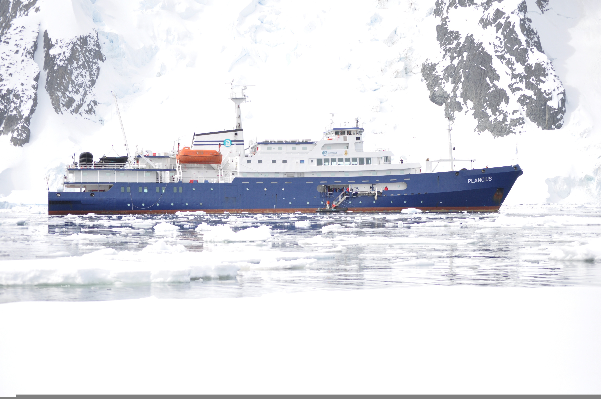


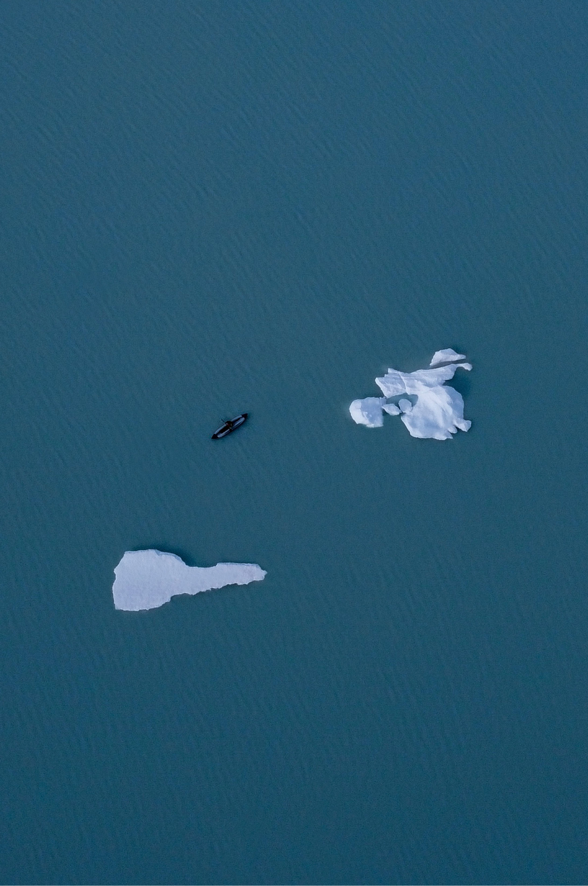
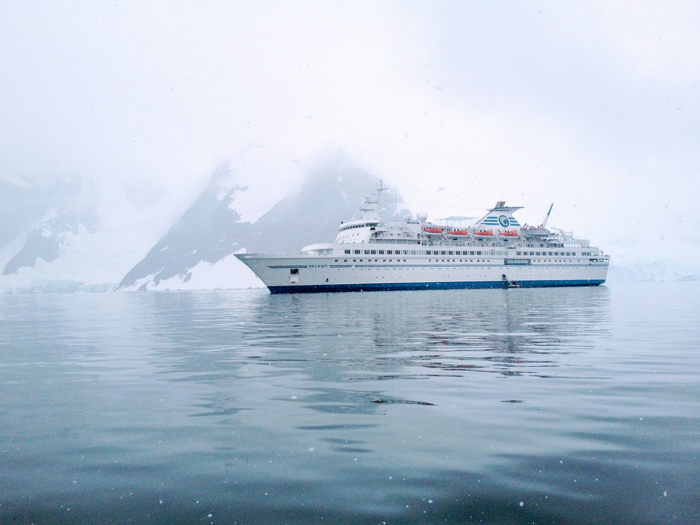
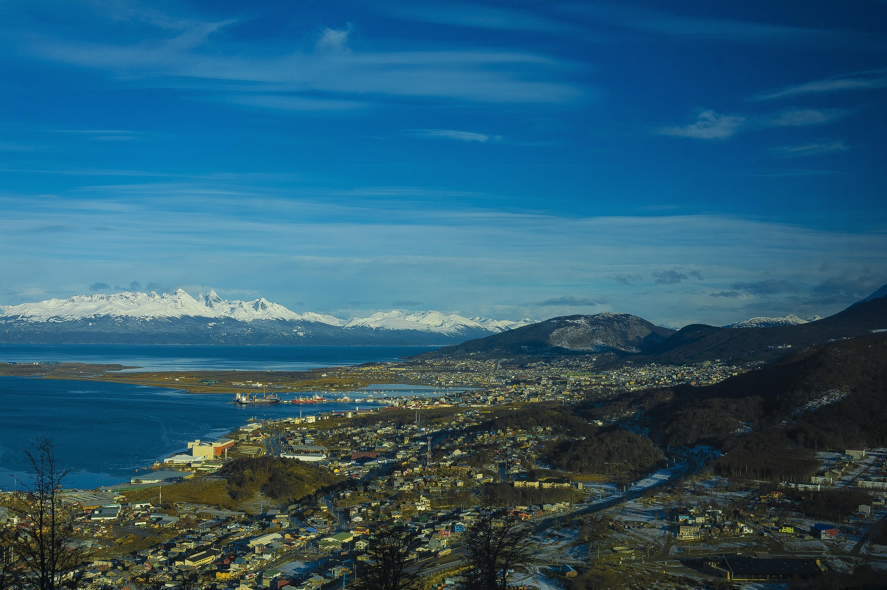
La ley lo ordena
desde 2003.
PAIX materializa el mandato legislativo que la Provincia de Tierra del Fuego estableció hace dos décadas. No es una propuesta. No es una aspiración. Es un encargo pendiente de ejecución.
La provincialización de Tierra del Fuego estableció un territorio que incluye tanto la Isla Grande como los demás territorios comprendidos en el sector antártico argentino, entre los meridianos 25° y 74° Oeste, hasta el Polo Sur. Argentina es el único país del mundo con una provincia que gobierna simultáneamente territorio americano y antártico.
Define como actividad antártica provincial toda operación —pública o privada, nacional o internacional— que utilice TDF como base de apoyo. Obliga a la Provincia a promover servicios antárticos (Art. 8), a propiciar un complejo integrado multimodal (Art. 9), y establece que los convenios con operadores antárticos aprobados por la Legislatura adquieren fuerza de Ley (Art. 15).
Su Art. 2.4 dispone concretar, textualmente, un "Área Antártica Internacional" que consolide a Ushuaia como enclave logístico-científico-académico. El mandato fue establecido en 2004. PAIX es la identidad con la que ese mandato empieza a ejecutarse en 2026.
El régimen de promoción fiscal de Tierra del Fuego —exenciones de IVA, ganancias y derechos de importación— aplica a toda operación radicada en la provincia, incluyendo la infraestructura logística, las operaciones de combustible y los servicios de soporte antártico. Es una ventaja competitiva estructural que ningún otro hub antártico del mundo posee.

Lo que falta no es otra ley.
Lo que falta no es otra ley. Lo que falta es la decisión de ejecutar las que ya existen, y el coraje empresario para hacerlo.
PAIX es el marco conceptual, normativo y operativo que promueven empresarios de Tierra del Fuego convencidos de que esta provincia puede asumir plenamente la organización y el rol que la geografía, la historia y la ley le asignan.
Sus nueve vectores no compiten entre sí. Se potencian. El Vector I genera infraestructura que el Vector II necesita. El Vector III forma los recursos que el Vector I demanda. El Vector IV construye la soberanía que el Vector VI proyecta. El Vector V le da coherencia y capacidad comercial al conjunto. El Vector VII garantiza que todo se haga con responsabilidad sobre el ecosistema más frágil del planeta. El Vector VIII demuestra que la demanda ya existe y que el mundo sabe llegar. Y el Vector IX garantiza que toda esa operación sea trazable, eficiente y exportable como modelo al resto del sistema antártico.
PAIX en los medios
Noticias, artículos y acontecimientos que construyen la agenda antártica de Ushuaia.